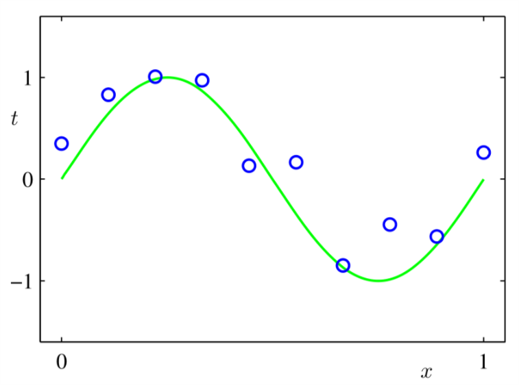
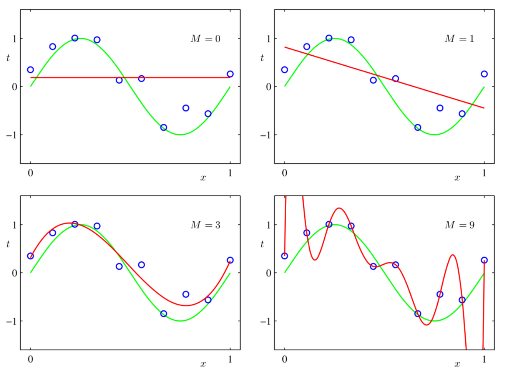
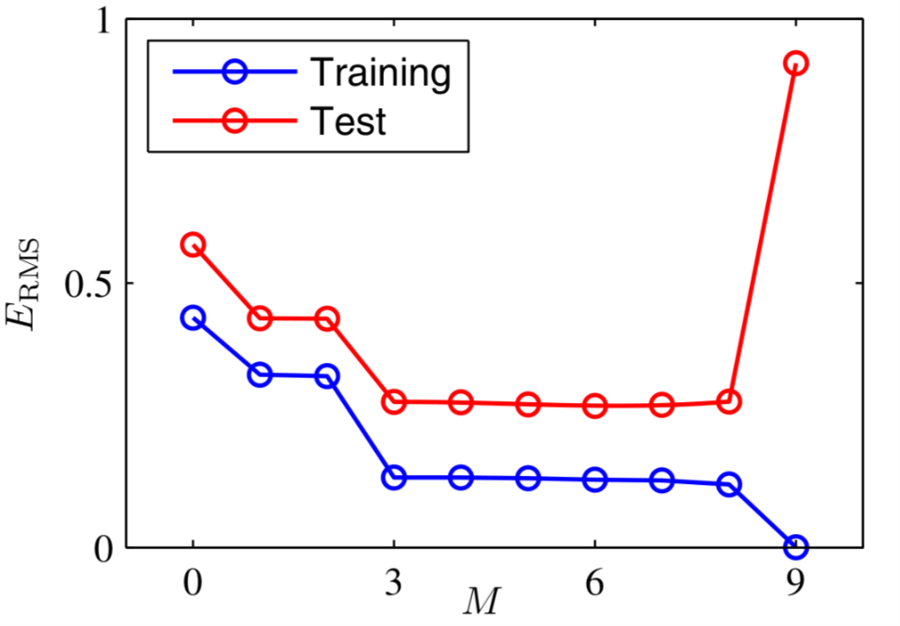
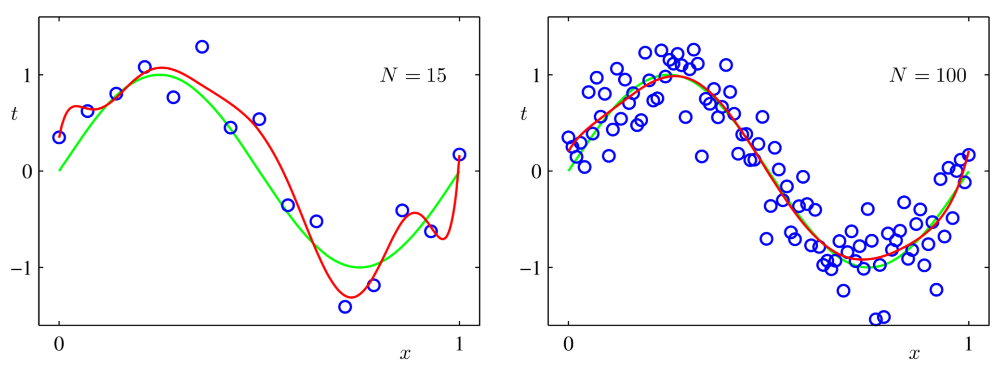
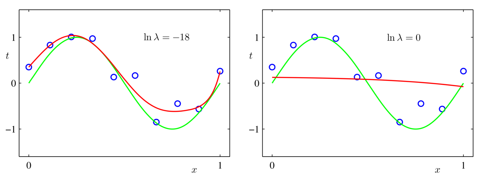
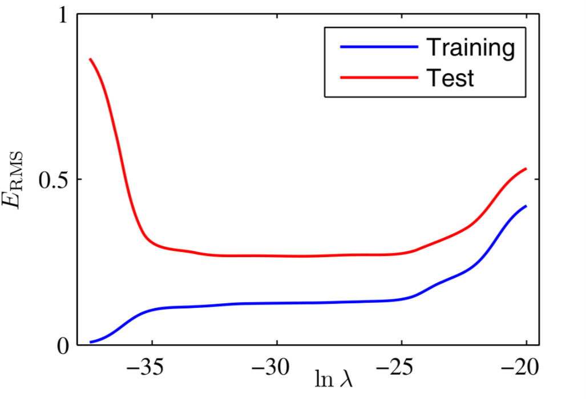

从多项式曲线拟合到模式识别的相关概念
多项式曲线拟合是一个经典的机器学习入门案例。我在不止一本教科书上看到过。此处的笔记来自于 Bishop的PRML。在阅读这个案例的过程中，被Bishop的组织能力折服：诸多概念在不经意间被引入，毫无违和感。另外通读PRML之后，会发现多项式拟合的例子在PRML中被反复提及，从这个简单的案例中可以看到许多更高级算法的影子。
1 问题模型
简而言之，这是一个用多项式来逼近正弦函数的例子。在这个例子中的观察数据可以表示为：\[ t = \sin(2\pi x) + n\]其中\(n\)是噪声。这个问题模型像极了通信系统中的加性白高斯噪声信道模型（AWGN）\(y=x+n\) 。假设我们有关于这个模型的\(N\)次观测，也就是说我们有长为\(N\)的\( \mathbf{x} = (x_{1},\ldots ,x_{N})^{T}\) 以及其对应的观测值\( \mathbf{t} = (t_{1},\ldots ,t_{N})^{T}\)。 图1给出了这个模型的十次观测结果和真实的正弦曲线。

图 1: 模型\(t = \sin(2\pi x) + n\)的十次观测
图1中的蓝色圆圈代表十次观测值，绿色代表真实的结果。我们的目标是在不知道绿色曲线的前提下根据新的输入值\(x\)预测目标值\(t\)。图1 中的输入值\( \mathbf{x}\)是\([0,1]\)区间内随机选择的十个值。然后根据所选的\(\mathbf{x}\)，带入\(\sin(2\pi x)\)，生成十个精确的值，然后把这十个生成值加上一定量的噪声，目标数据集合\(\mathbf{t}\)就这样诞生了。（注意这里没有说加上多少噪声，在通信系统中，我们叫做信噪比不确定。Bishop在PRML中也没有指明到底是功率为多少的噪声，只说了 a small level of random noise having a Gaussian distribution ） 我们明白这十个数是有内在约束的，即也就是\(\sin(2\pi x)\)这个函数，这个函数是我们学习的目标，我们拿到这十个数的时候是不知道这个模型的存在的。
2 多项式拟合
通过充分挖掘给定数据，我们希望对任何给定的新的输入\(\hat{x}\)，给出一个输出值\(\hat{t}\)，使得这个\(\hat{t}\)尽可能的 准确 (稍后我会给出 准确 这个词的精确含义)。这个问题的难点在于我们需要从十分有限的数据中发现潜在的数学模型\(\sin(2\pi x)\)。雪上加霜的是，这些数据还受到了噪声的污染。
现在，我们从最直观简单的数学方法入手：曲线拟合。特别的，我们把这个潜在的数学模型\(\sin(2\pi x)\)放在多项式空间中，也就是说我们认为这个潜在的模型存在于\((1,x,\ldots ,x^{M})\)张成的空间中。\(M+1\)是这个多项式空间的维度。所以多项式拟合的结果可以表示为：
\begin{equation} \label{eq:1} y(x, \mathbf{w}) = w_{0} + w_{1}x + \ldots + w_{M}x^{M} = \sum_{j=0}^{M}w_{j}x^{j} \end{equation}这个多项式的系数\(w_{j},j\in \{0,\ldots ,M\}\)就是我们要学习的目标。尽管这个多项式关于\(x\)不是线性的，但是关于\(w_{j}\)来说却是线性的，我们叫这样的模型为 线性模型 。
式(\ref{eq:1})的系数一定要选的 准确 才能比较好的拟合给出的十个点。通过最小化 误差函数 ，我们可以得到关于这\(M\)个\(w_{j}\)系数的一个估计。我们要用这个误差函数来表示\(y(x, \mathbf{w})\)和给定训练数据之间的不匹配程度。因此，这个误差函数的选取也是比较讲究的，在以后的学习中会碰到各种各样的误差函数。现在，我们选择用\(y(x, \mathbf{w})\)和\( \mathbf{t}\)之间的差值的平方和来表示误差，即：
\begin{equation} \label{eq:2} E( \mathbf{w}) = \frac{1}{2} \sum_{n=1}^{N}\{y(x_{n}, \mathbf{w}) - t_{n}\}^{2} \end{equation}系数\(\frac{1}{2}\)只是为了求导的时候去掉多余的一个因子\(2\)，使得求得的\(w\)更有直观的意义，稍后就会发现了。

图 2: 误差函数示意图
图2中绿色就表示训练数据和我们估计的模型\(y(x, \mathbf{w})\)之间的误差。红色标示我们估计的结果\(y(x, \mathbf{w})\)，显然一个比较精确的估计是\(y(x, \mathbf{w})\)穿过所有的蓝色圆圈，即拟合结果与所有的训练数据完美匹配。
3 找到合适的\( \mathbf{w}\)和\(M\)
整个拟合过程就是找到合适的\(\mathbf{w}\)的过程。显然学过微积分的同学都晓得，通过对每一个\(w_{j}\)求导，就可以找到误差函数(\ref{eq:2})的最小值。在这里由于误差函数是二次的，其导数就是一次的，所以\(w_{j}\)是唯一的。所以我们可以找到式(\ref{eq:1})的最优拟合，我们用\(y(x,\mathbf{w}^{*})\)表示。
另一个问题还没有解决：\(M\)怎么选？实际上，选\(M\)的过程在机器学习领域叫做模型选择(model selection). 图3给出了不同的\(M\)值对应的模型对(\ref{eq:1})的拟合结果。

图 3: 不同\(M\) 对(\ref{eq:1})的拟合结果
我们可以看到\(M=0,1\)对\(\sin(2\pi x)\)的拟合是非常粗糙的。\(M=3\)时, \(y(x, \mathbf{w}^{*})\)给出了对(\ref{eq:1})最好的拟合。当我们把\(M\)改成\(9\)时，我们发现，拟合结果完美的穿过了所有的训练数据，此时\(E( \mathbf{w}^{*}) = 0\)。但是这个拟合就是好的么？显然不是的，我们发现这个拟合结果抖动剧烈，和真实的模型(\(\sin(2\pi x)\))相去甚远。我们把这样的现象叫做过度拟合(over-fitting)
我们在 前文 提到，机器学习的泛化能力是一个非常重要的能力。对于新的输入\(\hat{x}\)，学习得到的模型需要给出合理的\(\hat{t}\)。我们可以用另外的100组测试数据来检测估计模型（不同的\(M\)代表不同的模型）的泛化能力。这个时候我们用均方根误差函数来衡量不同模型的优劣比较方便。
\begin{equation} \label{eq:3} E_{RMS} = \sqrt{2E( \mathbf{w}^{*})/N} \end{equation}式(\ref{eq:3})所示的这个均方根误差函数的优点在于：1.对不同数量的测试数据集（不同大小的\(N\)），比较结果是经过归一化的（因为有除以\(N\)的归一化操作）。2.开根号的好处在于\(E_{RMS}\)的量纲和\(t\)是一样的。不同\(M\)对应的\(E_{RMS}\)如图4所示.

图 4: 不同\(M\)对应的均方根误差
从图4 可以看出，当\(M=3,4,5,6,7,8\)时，均方根误差最小，当\(M=9\)时训练数据集的均方根误差最小，但是测试数据集的均方根误差最大。这是很容易理解的，因为我们的训练数据集一共只有10个数据，而当\(M=9\)时，我们这个模型中有10个未知数。十个方程十个未知数，我们可以独一无二的解出\(w_{j},j \in \{0,1,\ldots ,9\}\)。但是这个解出来的模型抖动剧烈并与真实的模型相去甚远，所以当输入测试集的时候，这个模型就表现出了很大的均方根误差。
现在，我们身处一个相当尴尬的矛盾境地。原则上说\(M=9\)的模型可以产生和\(M=3\)的模型一样的估计结果，因为\(M=9\)的多项式空间包含了\(M=3\)的多项式空间。另外，我们还认为最精确的估计应该来自于\(\sim(2\pi x)\)本身，而对\(\sin(2\pi x)\)进行泰勒展开，我们会发现这个展开式包含所有阶数的\(x^{j}\) （系数为零的也算）。所以我们有理由期待越大的\(M\)给出的模型估计精度越高。但是，事实却不是这样，到底哪里出错了呢？
4 修正误差函数
针对上一节出现的问题，我们来仔细挖掘观察一下不同\(M\)对应的\(\mathbf{w}^{*}\)。表1给出了不同\(M\)对应的\(\mathbf{w}^{*}\)
| \(M=0\) | \(M=1\) | \(M=6\) | \(M=9\) | |
|---|---|---|---|---|
| \(w_{0}^{*}\) | 0.1970 | 0.82 | 0.31 | 0.35 |
| \(w_{1}^{*}\) | -1.27 | 7.99 | 232.37 | |
| \(w_{2}^{*}\) | -25.43 | -5321.83 | ||
| \(w_{3}^{*}\) | 17.37 | 48568.31 | ||
| \(w_{4}^{*}\) | -231639.30 | |||
| \(w_{5}^{*}\) | 640042.26 | |||
| \(w_{6}^{*}\) | -1061800.52 | |||
| \(w_{7}^{*}\) | 1042400.18 | |||
| \(w_{8}^{*}\) | -557682.99 | |||
| \(w_{9}^{*}\) | 125201.43 |
我们发现随着\(M\)的变大，\(\mathbf{w}^{*}\)的系数也在变大，而且越变越大，不成线性的变大。我们可以推断，对于较大的\(M\)，基于给定数据拟合曲线时，其应对训练数据中噪声的能力越强。但是其应对测试数据中噪声的能力却不是那么回事儿了。
另外一个有意思的现象是：对于给定的\(M=9\)，假设我们加大训练数据，那么过度拟合线性就会消失，如图5所示。

图 5: 加大训练数据对拟合结果的影响
从图5中可以看出，同样是\(M=9\)，当我们增大训练数据集的时候，过度拟合现象就消失了。一个合理的解释是更大训练数据集可以拟合出更复杂的模型。只有十个点的训练数据集拟合出的\(M=9\)的模型没有一百个点的训练数据集拟合出的\(M=9\)的模型准确。一个粗略的估计是训练数据集中数据的个数应该是模型参数个数的5到10倍。但是在以后的学习过程中我们发现这个关于模型复杂度的估计并不是必须的。
截止目前我们必须根据训练数据集的大小限制模型参数的个数。这不怎么令人满意啊！或许，从已经解决的问题的复杂度来估计为解决问题的复杂度会比较好。这句话听起来比较难懂。我们将看到，最小二乘法找到的模型是基于最大似然准则的结果。我们还将发现过度拟合问题可以视作最大似然问题的一个固有的毛病。我们还将看到，当模型参数超过训练数据集中数据个数时，基于贝叶斯方法，我们可以找到比较有效的模型。
但是，我们暂且把最大似然准则和贝叶斯方法放一放。接着多项式拟合问题往下走，我们想知道难道对于十个训练数据点我们就不能用\(M=9\)这样的复杂模型了吗？不是的。对于十个数据点\(M=9\)导致的过度拟合问题，一个有效的解决办法是 正则化 。正则化的最直接方案是为式(\ref{eq:2})引入一个惩罚项。把(\ref{eq:2})变为：
\begin{equation} \label{eq:4} \tilde{E} = \frac{1}{2}\sum_{n=1}^{N} \{y(x_{n}, \mathbf{w}) - t_{n}\}^{2} + \frac{\lambda}{2} || \mathbf{w} ||^{2} \end{equation}
在式(\ref{eq:4})中，惩罚项是所有系数的平方和。\[|| \mathbf{w}||^{2} = \sum_{i=0}^{M} w_{i}^{2}\] 系数\(\lambda\)控制着正则项的权重。这样的技术在统计学里叫做 shrinkage 因为它使得系数的值变小了。在神经网络领域，这个技术叫做 weight decay 。以后我们会越来越多的发现，机器学习是多学科交叉的结果。同一个问题，在不同领域有不同的解释，使用不同的术语。
图6展示了当\(M=9\)时，不同的\(\lambda\)对应的拟合效果。

图 6: 当\(M=9\)时，不同\(\lambda\)对应的拟合效果
可以看出当\(\ln \lambda = -18\)时，十个训练点\(M=9\)也能获得较好的拟合效果了。但是当\(\ln \lambda = 0\)时，拟合效果就不怎么好看。
表2 给出了 \(M=9\)时，不同\(\ln \lambda\)对应的\( \mathbf{w}^{*}\) 。
| \(\ln \lambda = -\infty\) | \(\ln \lambda = -18\) | \(\ln \lambda = 0\) | |
|---|---|---|---|
| \(w_{0}^{*}\) | 0.35 | 0.35 | 0.13 |
| \(w_{1}^{*}\) | 232.37 | 4.74 | -0.05 |
| \(w_{2}^{*}\) | -5321.83 | -0.77 | -0.06 |
| \(w_{3}^{*}\) | 48568.31 | -31.97 | -0.05 |
| \(w_{4}^{*}\) | -231639.30 | -3.89 | -0.03 |
| \(w_{5}^{*}\) | 640042.26 | 55.28 | -0.02 |
| \(w_{6}^{*}\) | -1061800.52 | 41.32 | -0.01 |
| \(w_{7}^{*}\) | 1042400.18 | -45.95 | 0.00 |
| \(w_{8}^{*}\) | -557682.99 | -91.53 | 0.00 |
| \(w_{9}^{*}\) | 125201.43 | 72.68 | 0.01 |
从表2 可以看出 当\(\lambda\) 增大时，模型系数降低。这也是我们称(\ref{eq:4})的方法为正则化的原因。
同样我们还可以画出训练数据和测试数据对应的均方根误差，如图7所示。

图 7: \(M=9\)时，不同\(\ln \lambda\)对应的\( E_{RMS}\)
从图7 我们可以看出\(\lambda\)的确有效的控制了测试数据对应的均方根误差。但是训练数据的均方根误差也会有所上升，而不是保持在零。
5 总结
本文引入了机器学习中的几个重要概念，包括模型估计，模型选择，误差函数，正则化。不同的模型对应的复杂度也大不相同。模型复杂度问题是以后我们经常会碰到的问题。事实上，对于每一个模型和误差函数，我们都必须考虑其模型复杂度。